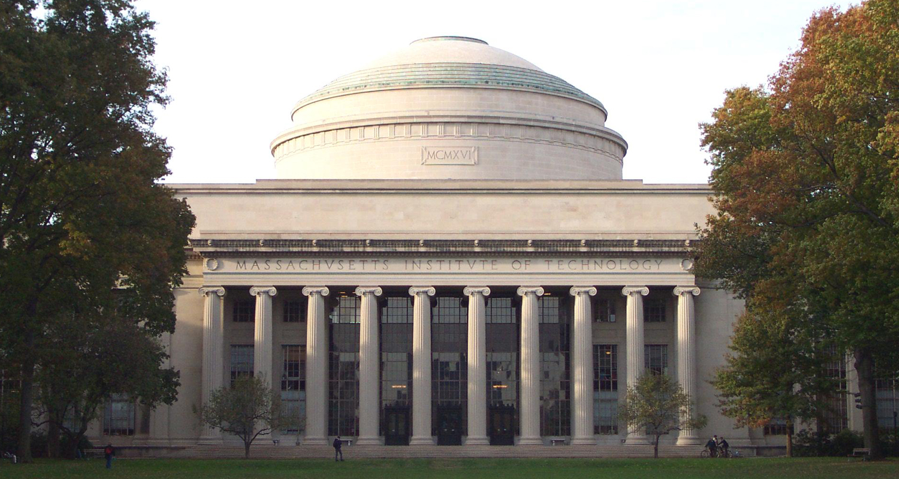
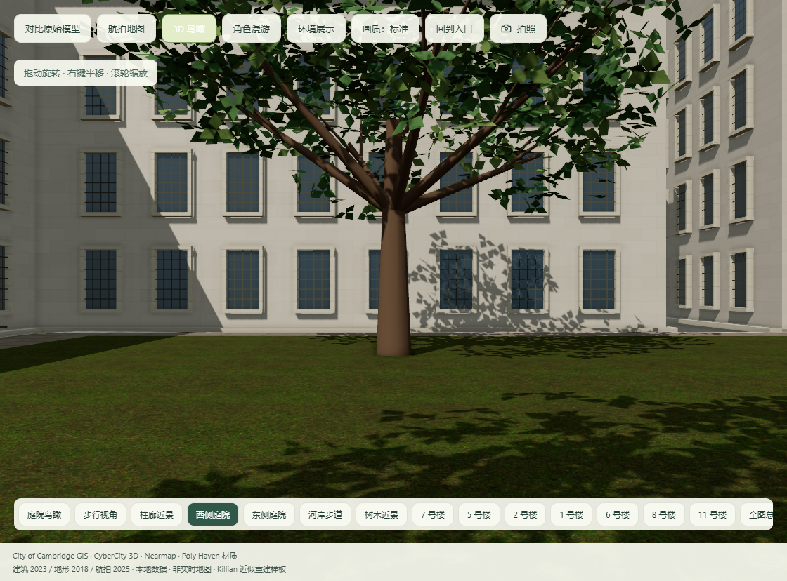
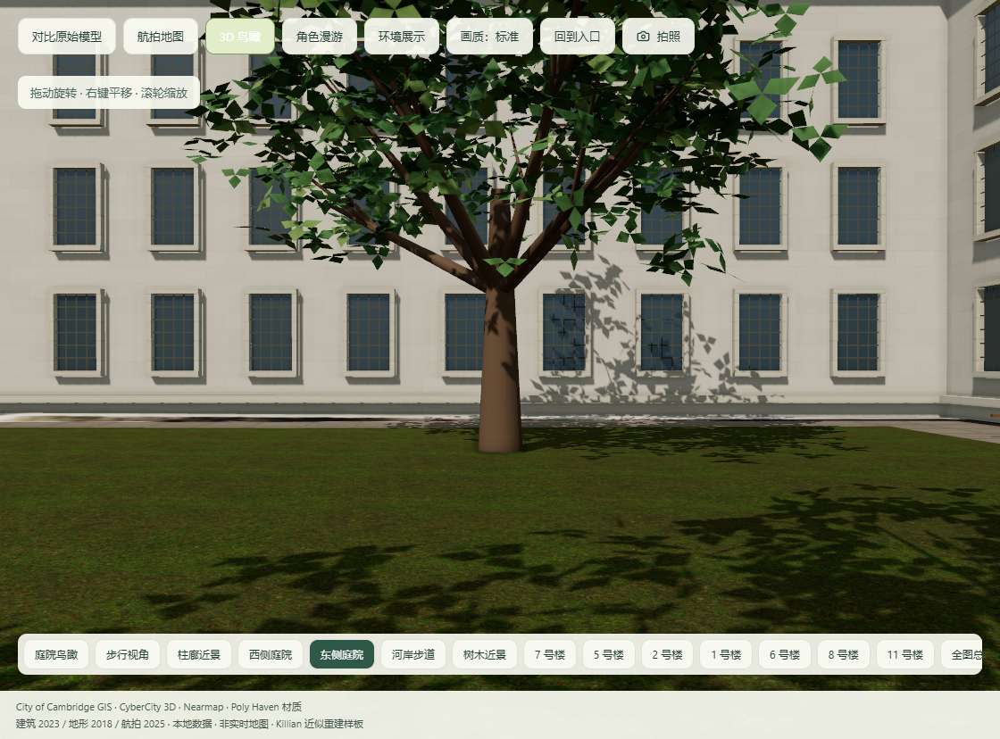
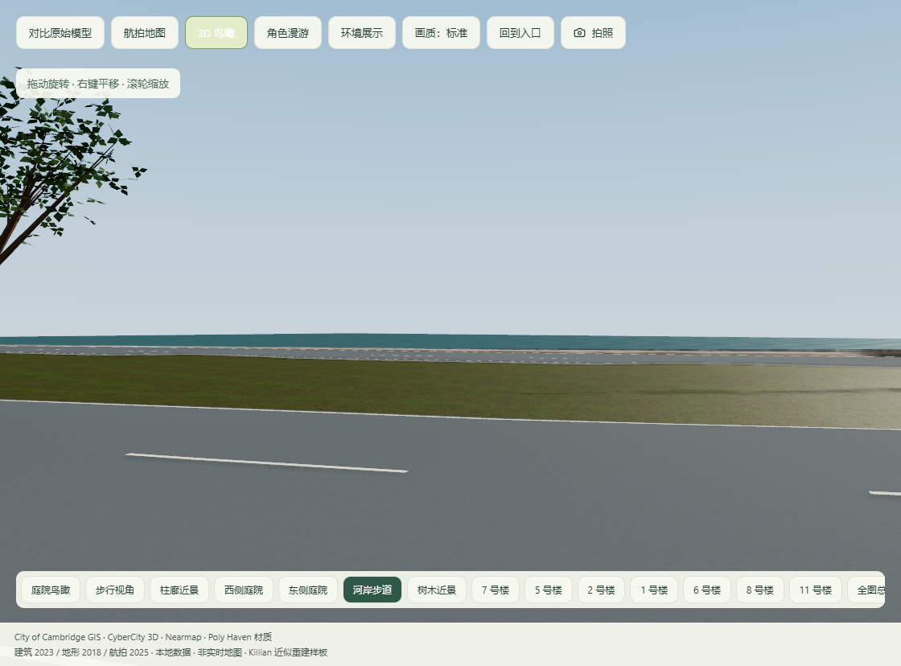

MIT 写实化 · 整合改造对照
累计更新：真实人眼高度、主楼门窗、石灰石与沥青表面、连续步道、植被分级和渐进加载。仍有基础建筑模型，尚未逐栋精确复刻。

 更新前更新后
更新前更新后真实参考与剩余差距
新增三张 MIT List 官方照片，已用于主楼入口和高窗关系修正。仍缺侧翼近景、道路边缘及河岸的成组实拍参考；当前不会把通用材质或重复窗格标为真实复原。

原始照片来源 · 改造计划与交付记录
完整交付记录与验证结果
新增人眼机位
西侧庭院、东侧庭院与河岸步道，均为地面以上 1.65 米。



打开实时场景 → 点击「环境展示」